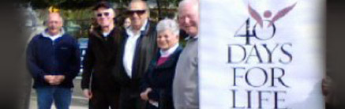
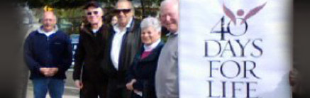

 
History
The KNIGHTS OF COLUMBUS is a fraternal charitable order of Catholic gentlemen focusing on family, fraternity, and service and is the largest Catholic family fraternal service organization in the world. Father Michael J. McGivney established the KNIGHTS OF COLUMBUS in New Haven, Connecticut on March 29, 1882. The founding principles of the KNIGHTS OF COLUMBUS are to help Catholic gentlemen to remain steadfast in their faith through mutual encouragement; to promote closer ties of fraternity among those Catholic gentlemen; and to set up an elementary system of insurance for members and their families.
Father McGivney named this fraternal organization after Christopher Columbus, the Catholic discover of North America. He chose the term “Knights” to signify that the membership embodies knightly ideals of spirituality and service to Church, country, and fellowman. The KNIGHTS OF COLUMBUS is governed by the Supreme Council headquartered in New Haven. The Knights of Columbus has grown from several members in one council to more than 14,000 councils and 1.8 million members throughout the United States, Canada, the Philippines, Mexico, Poland, the Dominican Republic, Puerto Rico, Panama, the Bahamas, the Virgin Islands, Cuba, Guatemala, Guam and Saipan.
Membership in the KNIGHTS OF COLUMBUS is open to practical Catholic men in union with the Holy See who are at least 18 years or older. A practical Catholic is one who lives up to the Commandments of God and the Precepts of the Church. Prospective candidates to the KNIGHTS OF COLUMBUS complete a Form 100 which is then reviewed by the prospective member’s Council. Following review of the Form 100 and payment of applicable dues by the candidate, the Council will vote on whether to confer membership to the candidate.
The ideals of the KNIGHTS OF COLUMBUS are represented by four degrees: First-Charity, Second-Unity, Third-Fraternity, and Fourth-Patriotism. Once a candidate has been voted into membership, he is scheduled to be initiated into the First Degree. Subsequently, the member advances through the Second and Third Degrees. Any Third Degree member in good standing one year after the anniversary of his First Degree is eligible for membership in the Fourth Degree. Certain members of the Fourth Degree may elect to serve as honor guards at civic and religious functions.
One of Father McGivney’s initial objectives in founding the KNIGHTS OF COLUMBUS was to provide some level of financial security for its members and their families. Since its initial founding, over 120 years ago the KNIGHTS OF COLUMBUS’s insurance program has grow into one of the most successful and secure providing a versatile portfolio of protection. A KNIGHTS OF COLUMBUS Insurance field agent serves each Council. As a member of the KNIGHTS OF COLUMBUS, you will have an opportunity to meet with an insurance field agent who can tailor coverage to meet the particular needs of yourself and your family.
Members of the KNIGHTS OF COLUMBUS also receive the Order’s monthly magazine Columbia.
Growth of the Knights of Columbus
Pope John Paul was quoted as saying the Knights of Columbus are the right arm of the church. The Knights of Columbus (KNIGHTS OF COLUMBUS) is the largest catholic family, fraternal, and service organization in the world with over 14,000 Councils and 1.8 million members worldwide.
 Supreme Council
Supreme Council  State Council
State Council 
 Divine Savior Parish
Divine Savior Parish  Charity through Golf Tournament
Charity through Golf Tournament